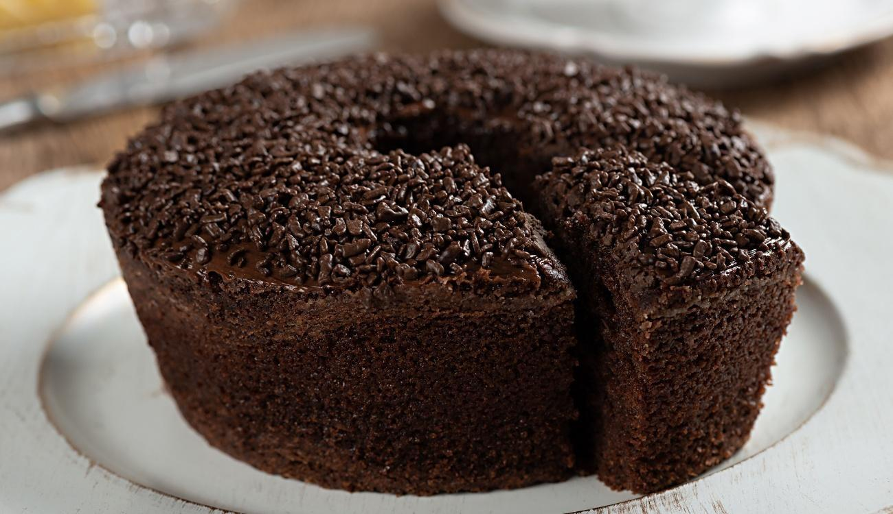
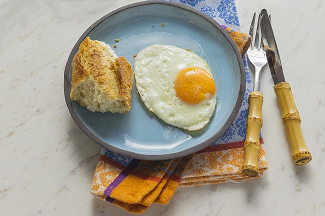

Livro de Receitas
Exercício 1 - semana 01 - Floripa mais tech
# Bolo de Chocolate #
# Bolo de morango #
# Ovo Frito #
Bolo Chocolate

INGREDIENTES
3 ovos
1 e 1/2 xícara (chá) de açúca
2 xícaras (chá) de farinha de trigo
1 xícara (chá) de chocolate em pó ou achocolatado
1/2 xícara (chá) de óleo
1 colher (sopa) de fermento em pó
1 pitada de sal
1 xícara (chá) de água quente
MODO DE PREPARO
MASSA
Em um liquidificador, bata os ovos, o açúcar, o óleo, o achocolatado e a farinha de trigo.
Despeje a massa em uma tigela e adicione a água quente e o fermento, misturando bem.
Despeje a massa em uma forma untada e asse em forno médio-alto (200° C), preaquecido, por 40 minutos.
Desenforme ainda quente.
COBERTURA
Em uma panela, leve todos os ingredientes ao fogo até levantar fervura.
Despeje ainda quente em cima do bolo.
após esfriar, pode servir.
BOLO DE MORANGO

INGREDIENTES
- 4 gemas
- 1 xícara de chá de água
- 2 xícaras de chá de açúcar
- 2 xícaras de chá de farinha de trigo
- 1 colher de sopa de fermento em pó
- 4 claras batidas em ponto de neve
- 1 pitada de sal
RECHEIO
- 1 lata de leite condensado
- 1 xícara de chá de leite
- 1 gema
- 2 colheres de sopa de amido de milho
COBERTURA
- 3 xícaras de chá de morango picado
- 2 xícaras de chá de chantilly batido
- Morangos a gosto.
MODO DE PREPARO
MASSA
- Bata 4 gemas com 1 xícara de chá de água até espumar. Em seguida, adicione 2 xícaras de chá de açúcar e bata até formar um creme.
- Acrescente 2 xícaras de chá de farinha de trigo e 1 colher de sopa de fermento em pó peneirados. Misture delicadamente.
- Bata 4 claras até o ponto de neves e adicione à mistura delicadamente.
- Unte uma forma de fundo falso com margarina. Depois, forre com papel-manteiga e unte novamente.
- Transfira a massa para a forma e leve para assar em forno preaquecido a 180 graus Celsius por 40 minutos.
MODO DE PREPARO
RECHEIO
- Em uma panela, coloque 1 lata de leite condensado, 2 xícaras de chá de leite,
1 gema e 2 colheres de sopa de amido de milho. Misture e cozinhe até engrossar.
- Transfira a mistura para um recipiente e cubra com plástico-filme para não ressecar enquanto esfria.
MONTAGEM
- Corte o bolo em três partes e espalhe o recheio. Adicione o morango picado e repita o procedimento em mais uma camada do bolo.
- Coloque a parte de cima do bolo e cubra com chantilly batido.
- Decore com morangos a gosto e sirva em seguida.
OVO FRITO

INGREDIENTES
- 1 Ovo
- Azeite
- Sal
MODO DE PREPARO
- Coloque um fio de azeite na frigideira.
- Deixe aquecer.
- Quebre o ovo na figideira.
- Salpique uma pitada de sal por todo o ovo.
- Mantenha em fogo baixo até a clara estar rendada e a gema, mole.